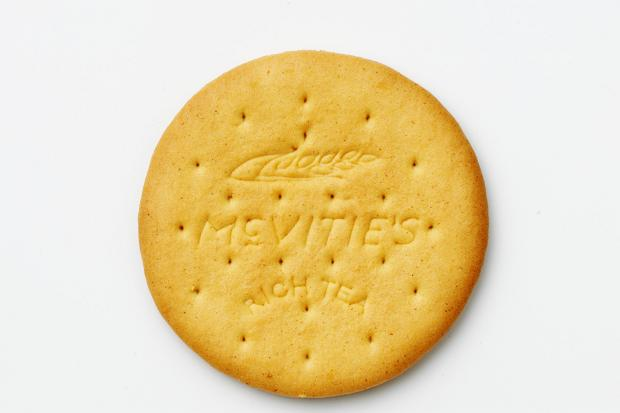

Saturday, April the 26th, 2014
back to: title, date or indexes
It is rare for me to feel imbued with the entrepreneurial spirit, but that is what happened this morning. I had a bright idea and envisioned myself as the onlie begetter of a vast multinational chain of snackbar franchises. All I need do now is draw up a business plan and make an appointment to see a friendly bank manager, who will be awed by my business nous and give me a start-up loan.
For some reason I was mulling over the success of Dunkin' Donuts—a success to which I have not myself contributed, never having entered one of these establishments. It suddenly occurred to me that a more civilised, more seemly version would be Dunkin' Rich Tea Biscuits. Customers would enter, sit down, and order a cup of tea and one, or perhaps two, of these plain and virtually flavourless biscuits. Who could resist?
